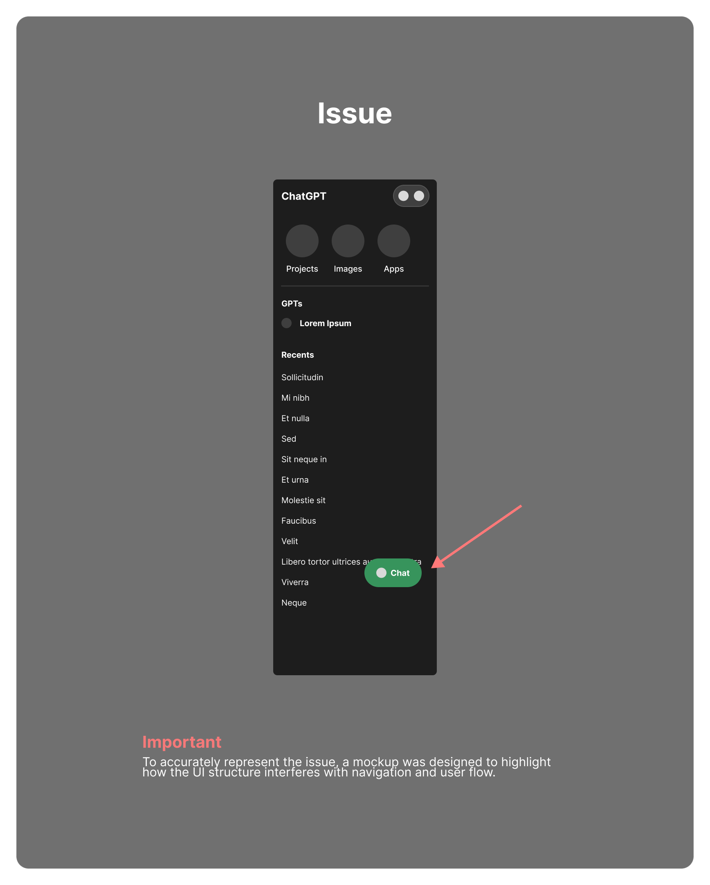
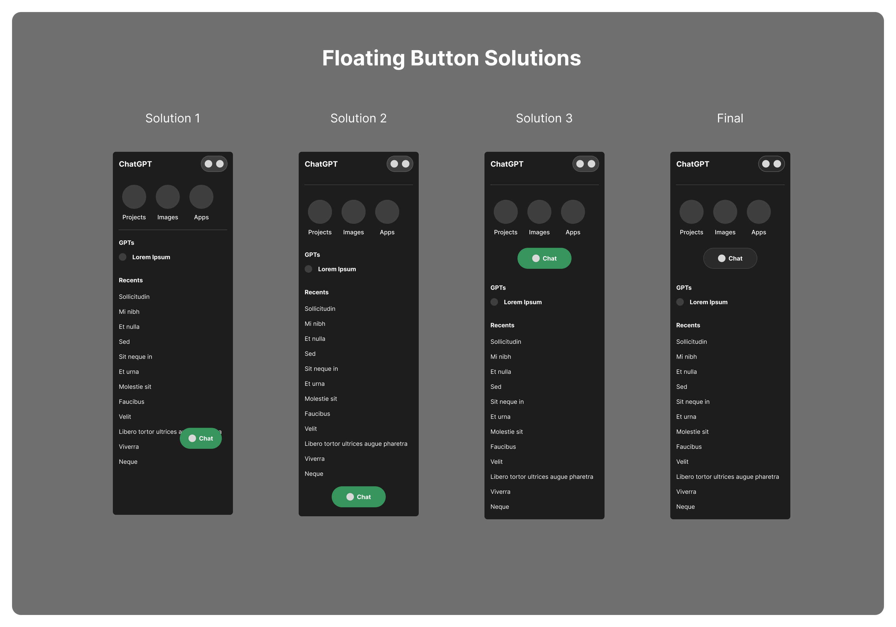

Product Design Case Study
Chat Navigation Obstruction (Tablet UI)
A structural UI issue where a floating primary action interferes with navigation, reducing clarity, increasing friction, and weakening usability on tablet.

Context
While using ChatGPT on a tablet device, I observed a navigation issue in which a primary action element interferes with core user functionality.
Problem
The Create New Chat floating button is positioned on top of the existing chat list, causing:
- Obstruction of visible chat items
- Reduced accessibility to navigation content
- Increased chance of misclicks
- Disruption to scanning and selection flow
This creates friction in a high-frequency interaction zone.
Why This Matters
This is not purely a visual issue. It is a structural UI problem affecting UX and system interaction.
- Chat list = primary navigation
- Create button = primary action
When both occupy the same space, UI hierarchy breaks and creates cognitive conflict.
Impact on User Experience
- Users must visually work around interface elements
- Navigation becomes less efficient
- Interaction errors become more likely
- System behavior feels less clear and less reliable
System logic may still function correctly, but usability degrades when UI structure fails.
Root Cause
- Mobile-first floating action pattern applied to tablet
- Insufficient layout adaptation for larger screens
- Missing separation between navigation and action layers
Solution Analysis

Solution Analysis
No-Change Option (Solution 1)
Relies on unstable user behavior.
Leaving the design unchanged avoids functional disruption, but assumes users won’t create many chats with long titles. Over time, this becomes unreliable as usage increases.
Bottom Placement (Solution 2)
Removes obstruction, adds friction.
Moving the action to the bottom resolves overlap, but forces users to scroll for a high-frequency action. The tradeoff introduces more friction than it removes.
Dedicated Placement (Solution 3)
Resolves structure and improves access.
Positioning the button outside the chat list—between quick actions and the conversation area—keeps it always accessible without interfering with navigation.
This aligns the action with the panel hierarchy, placing it where its role makes logical sense.
Final Refinement
Removes unnecessary visual signaling.
The green color implies completion or progress, but ChatGPT has no defined end state. Creating a new chat is a default behavior, not an achievement.
Normalizing the color reduces visual noise and improves consistency without harming usability.
However, this remains a component-level fix. A broader panel redesign would better address deeper structural issues.
Expected Outcome
- Clear navigation visibility
- Reduced interaction friction
- Improved user confidence and flow
- Stronger alignment between UI, UX, and system logic
Key Takeaway
UI is the interaction layer between user and system.
If the UI structure fails:
- UX suffers
- System usability weakens
That remains true even when the underlying functionality works correctly.